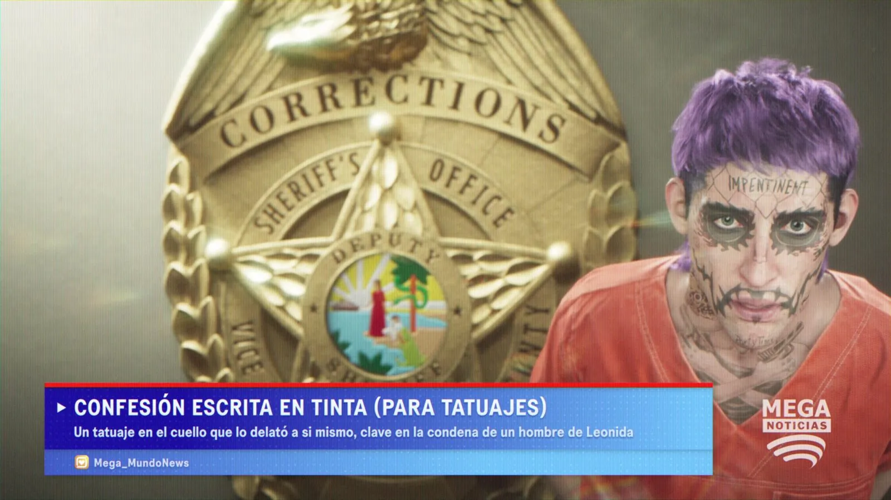
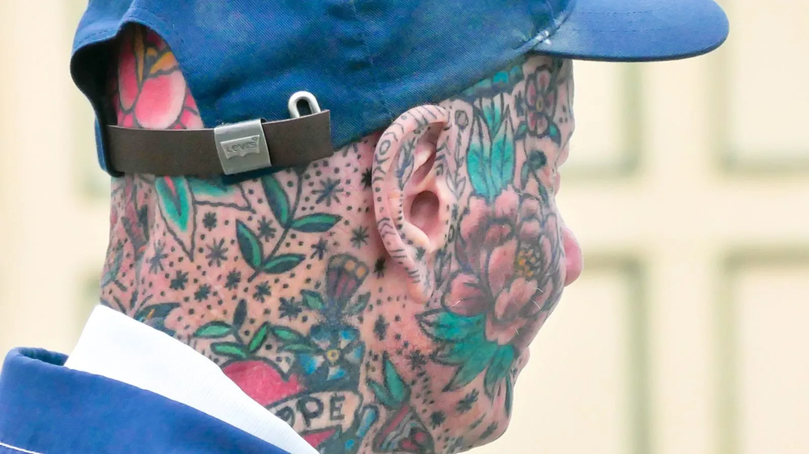
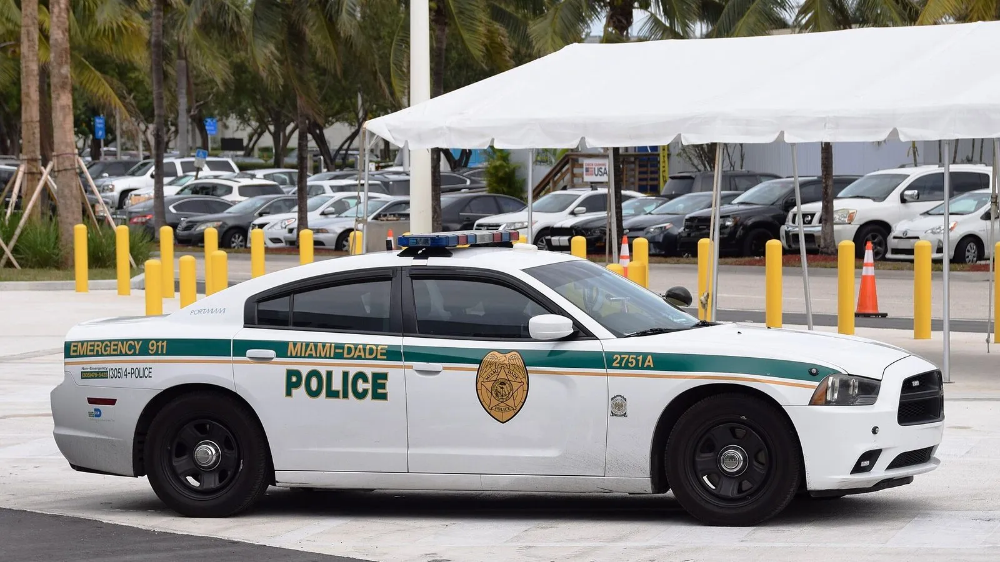
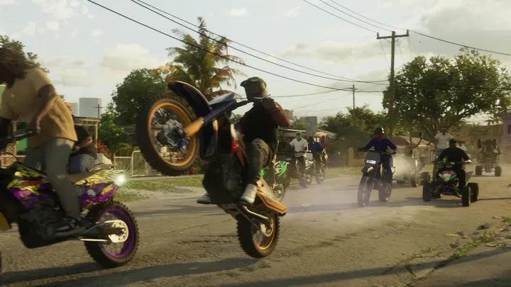
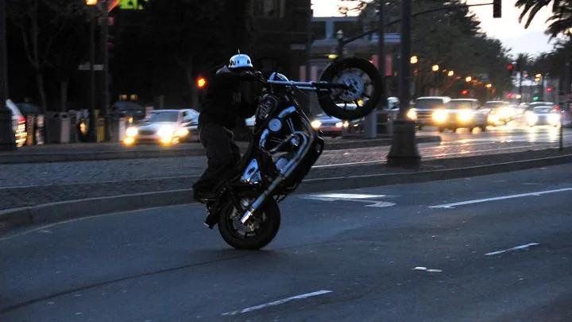
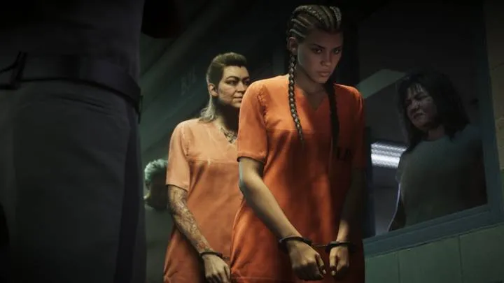
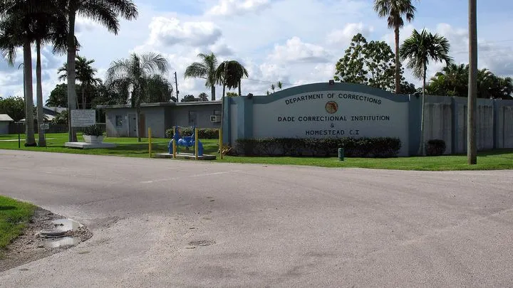

«Флоридский Джокер» в трейлере GTA 6 и реальный человек из Майами
Опубликовано:
Образ узнаваем: татуировки на всём лице, тюремный снимок в новостях. Но Rockstar сделала из него шутку — выпуск испаноязычных новостей «Признание, написанное чернилами». Что прототип — именно этот человек, Rockstar не подтверждала.


- В первом трейлере GTA 6 (декабрь 2023) — выпуск новостей MEGA NOTICIAS: арестант в оранжевой робе, с фиолетовыми волосами и татуировками на всём лице.
- Заголовок на испанском: «Признание, написанное чернилами (для татуировок)» — татуировка на шее выдала своего хозяина.
- Во Флориде есть мужчина, которого с 2017 года зовут «Флоридским Джокером»: его тюремное фото разошлось по интернету.
- После трейлера он заявил, что персонаж сделан с него, и попросил у Rockstar «миллион или два».
- Rockstar на это публично не ответила; в суд, по данным на декабрь 2023, он не подавал.
Что в игре
Около 1:05 первого трейлера GTA 6 идёт выпуск новостей канала MEGA NOTICIAS. На экране — молодой арестант в оранжевой робе: фиолетовые волосы, лицо покрыто татуировками, тёмные пятна вокруг глаз, надпись на лбу. За ним — золотой значок CORRECTIONS · SHERIFF’S OFFICE · DEPUTY, то есть охрана тюрьмы при офисе шерифа.
Бегущая строка — на испанском: «Confesión escrita en tinta (para tatuajes)» — «Признание, написанное чернилами (для татуировок)». Подзаголовок объясняет шутку: татуировка на шее выдала своего хозяина и стала ключевой уликой при осуждении жителя Леониды. Подпись канала — Mega_MundoNews.
Что в реальности
В мае 2017 года полиция Майами-Дейд задержала на юго-западе округа мужчину с татуировками на всём лице. По данным CBS News (24.05.2017), около 18:30 полиции сообщили, что человек с приметной внешностью направлял пистолет на проезжающие машины. У жилого комплекса нашли мужчину по описанию, в кармане у него был пистолет Smith & Wesson калибра .380. Обвинение — скрытое ношение оружия, залог — 5000 долларов.
Тюремное фото разлетелось по интернету, а за мужчиной закрепилось прозвище «Флоридский Джокер». По описанию FOX 35 (07.12.2023), у него на лбу вытатуировано слово «Joker», есть символ Бэтмена, а по бокам рта — «порезы», как у злодея из фильмов.

Первый трейлер GTA 6 вышел 5 декабря 2023 года. Уже в день премьеры «Джокер» записал видео в TikTok: по его словам, персонаж в трейлере вдохновлён им, и Rockstar «надо поговорить». В следующем видео он сказал, что GTA должна ему заплатить «где-то миллион или два», и добавил: «Вы взяли мою внешность, вы взяли мою жизнь» (FOX 35, 07.12.2023). GamesRadar+ 9 декабря 2023 года сообщил, что сумма выросла до 2 миллионов долларов и что в суд он пока не подавал. Rockstar публично это не комментировала.
Похожий спор у Rockstar уже был. Актриса Линдси Лохан судилась с Take-Two из-за героини GTA 5, но в марте 2018 года Апелляционный суд штата Нью-Йорк отклонил иск: персонаж — собирательный образ, а не её портрет.
В игре человека «сдаёт» его же татуировка — это и есть шутка заголовка. А надпись на лбу персонажа не «Joker»: Rockstar не скопировала татуировки один в один, а сделала узнаваемый, но собственный образ.
Совпадает и отличается
| Реальность | GTA 6 | |
|---|---|---|
| Татуировки на всём лице | Да, слово «Joker» на лбу, символ Бэтмена | 🟢 Да, но надпись на лбу другая |
| Тюремный снимок в новостях | Фото после ареста в 2017 году разошлось по интернету | 🟢 Арестант в оранжевой робе в выпуске новостей |
| Волосы | — | 🟣 Фиолетовые — цвет Джокера из комиксов |
| Сюжет новости | Пистолет и скрытое ношение оружия | 🟣 Татуировка на шее выдала хозяина |
| Подтверждение Rockstar | — | 🔵 Нет: связь заявил сам мужчина, Rockstar молчит |
Источники: Rockstar Games — «Grand Theft Auto VI Trailer 1» (05.12.2023, 1:05); CBS News, 24.05.2017 — задержание в Майами-Дейд; FOX 35 Orlando, 07.12.2023 — видео в TikTok и требование денег; GamesRadar+, 09.12.2023 — сумма 2 млн $; Апелляционный суд штата Нью-Йорк, 29.03.2018 — Lohan v. Take-Two Interactive; Wikimedia Commons — фото Frankie Fouganthin, Dickelbers (CC BY-SA 4.0).
Реальные фото: Фото: Frankie Fouganthin, CC BY-SA 4.0 · Wikimedia Commons; Фото: Dickelbers, CC BY-SA 4.0 · Wikimedia Commons. Кадры игры: Rockstar Games.
Каждый день — одно сравнение: кадр игры рядом с реальным фото. Подписывайтесь:
YouTubeInstagramTikTokСмотрите также

 vs
vs

vs

vs